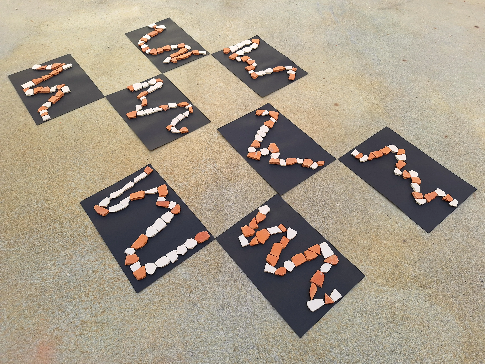
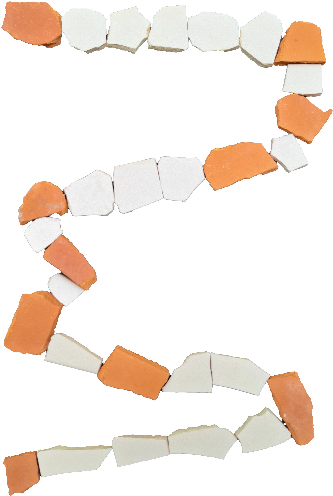

Bricks & Tiles
Bricks & Tiles is a generative design work using bricks and tiles from a construction. Every instance has a different outcome based on the path draw but all of them have 10 turning points.

